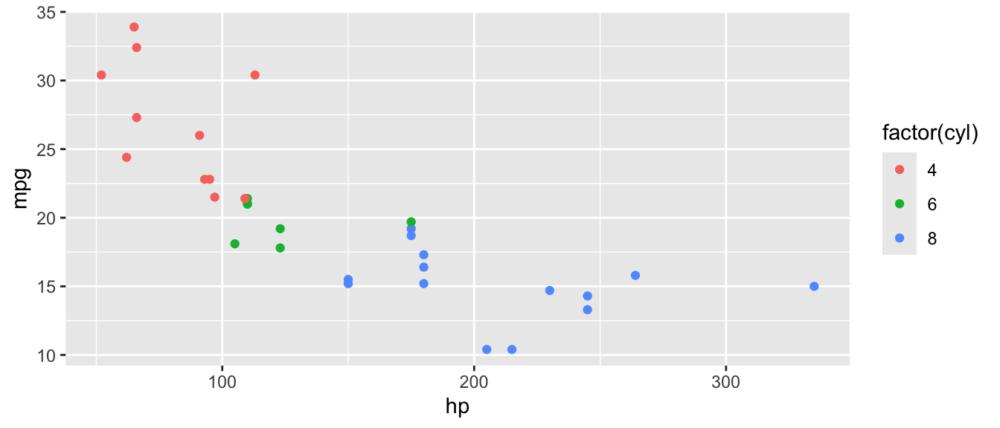
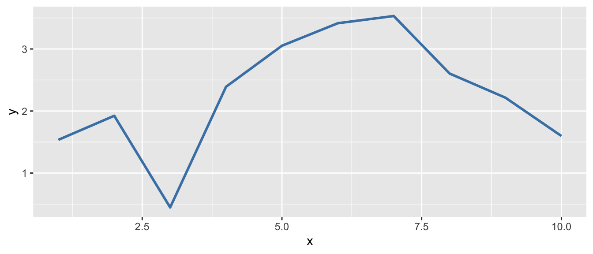
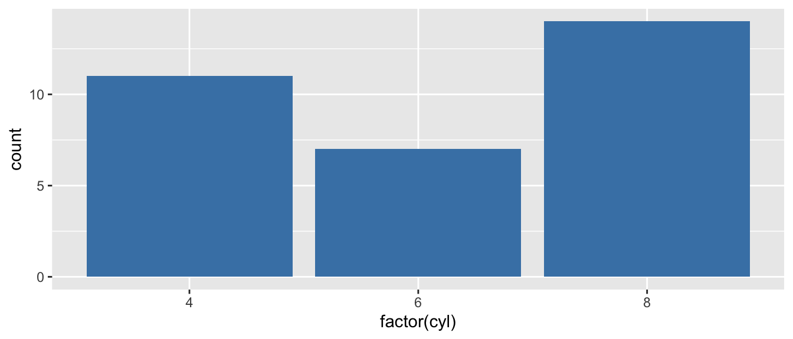
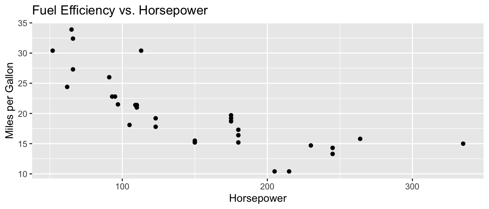
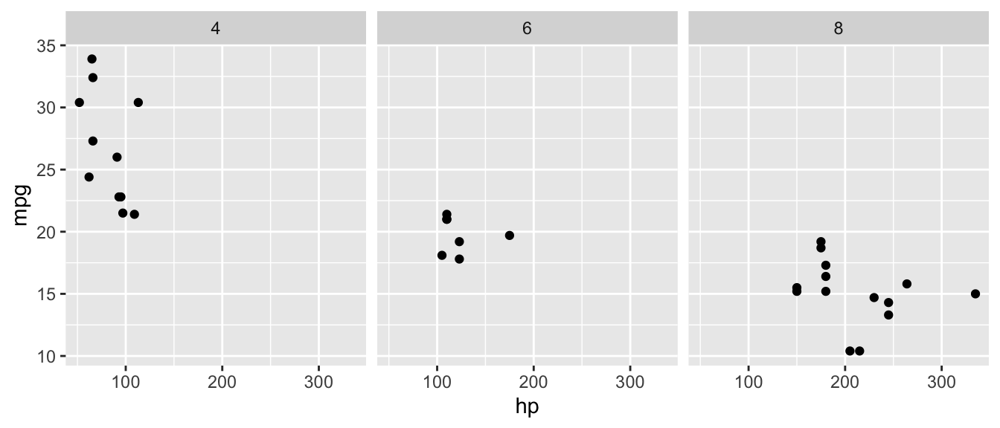

library(tidyverse)Appendix D — R Functions and Packages Reference
This appendix provides a quick reference for all the R functions and packages used throughout this book. Use this as a handy guide when you need to remember the syntax or arguments for a particular function.
D.1 Packages Used in This Book
D.1.1 tidyverse
The tidyverse is a collection of R packages designed for data science. When you load tidyverse, it automatically loads several packages including ggplot2, dplyr, tidyr, readr, and others.
What it’s used for:
- Data manipulation and transformation (
dplyr) - Data visualization (
ggplot2) - Reshaping data (
tidyr) - Reading data files (
readr)
Loading:
D.1.2 modelsummary
The modelsummary package creates publication-quality tables for regression results and descriptive statistics.
What it’s used for:
- Creating formatted regression tables comparing multiple models
- Generating descriptive statistics tables
- Exporting tables to Word, LaTeX, or HTML
Loading:
library(modelsummary)D.1.3 palmerpenguins
A dataset package containing measurements of penguins from Palmer Station, Antarctica. Great for learning data visualization and exploration.
What it’s used for:
- Practice dataset for learning R
- Data visualization examples
- Regression examples
Loading:
library(palmerpenguins)
data(penguins)D.1.4 wooldridge
Contains all datasets from Wooldridge’s Introductory Econometrics textbook.
What it’s used for:
- Real-world econometric datasets
- Regression examples (wages, crime, etc.)
Loading:
library(wooldridge)
data(wage1) # Example: load the wage1 datasetD.1.5 fixest
A fast and powerful package for fixed effects and panel data regression.
What it’s used for:
- Panel data regression with fixed effects
- Clustered standard errors
- Very large datasets (faster than
lm())
Loading:
library(fixest)D.1.6 lmtest
Provides diagnostic tests for linear regression models.
What it’s used for:
- Breusch-Pagan test for heteroskedasticity
- Other specification tests
Loading:
library(lmtest)D.1.7 sandwich
Provides robust covariance matrix estimators (heteroskedasticity-consistent standard errors).
What it’s used for:
- Robust standard errors
- Heteroskedasticity-consistent (HC) standard errors
Loading:
library(sandwich)D.1.8 patchwork
Easily combine multiple ggplot2 plots into a single figure.
What it’s used for:
- Arranging multiple plots side by side
- Creating multi-panel figures
Loading:
library(patchwork)D.2 Data Inspection Functions
D.2.1 head()
Display the first few rows of a data frame.
Arguments:
x: A data frame or vectorn: Number of rows to display (default: 6)
Example:
head(mtcars, n = 3) mpg cyl disp hp drat wt qsec vs am gear carb
Mazda RX4 21.0 6 160 110 3.90 2.620 16.46 0 1 4 4
Mazda RX4 Wag 21.0 6 160 110 3.90 2.875 17.02 0 1 4 4
Datsun 710 22.8 4 108 93 3.85 2.320 18.61 1 1 4 1D.2.2 glimpse()
Get a compact overview of a data frame’s structure and column types.
Arguments:
x: A data frame
Example:
glimpse(mtcars)Rows: 32
Columns: 11
$ mpg <dbl> 21.0, 21.0, 22.8, 21.4, 18.7, 18.1, 14.3, 24.4, 22.8, 19.2, 17.8,…
$ cyl <dbl> 6, 6, 4, 6, 8, 6, 8, 4, 4, 6, 6, 8, 8, 8, 8, 8, 8, 4, 4, 4, 4, 8,…
$ disp <dbl> 160.0, 160.0, 108.0, 258.0, 360.0, 225.0, 360.0, 146.7, 140.8, 16…
$ hp <dbl> 110, 110, 93, 110, 175, 105, 245, 62, 95, 123, 123, 180, 180, 180…
$ drat <dbl> 3.90, 3.90, 3.85, 3.08, 3.15, 2.76, 3.21, 3.69, 3.92, 3.92, 3.92,…
$ wt <dbl> 2.620, 2.875, 2.320, 3.215, 3.440, 3.460, 3.570, 3.190, 3.150, 3.…
$ qsec <dbl> 16.46, 17.02, 18.61, 19.44, 17.02, 20.22, 15.84, 20.00, 22.90, 18…
$ vs <dbl> 0, 0, 1, 1, 0, 1, 0, 1, 1, 1, 1, 0, 0, 0, 0, 0, 0, 1, 1, 1, 1, 0,…
$ am <dbl> 1, 1, 1, 0, 0, 0, 0, 0, 0, 0, 0, 0, 0, 0, 0, 0, 0, 1, 1, 1, 0, 0,…
$ gear <dbl> 4, 4, 4, 3, 3, 3, 3, 4, 4, 4, 4, 3, 3, 3, 3, 3, 3, 4, 4, 4, 3, 3,…
$ carb <dbl> 4, 4, 1, 1, 2, 1, 4, 2, 2, 4, 4, 3, 3, 3, 4, 4, 4, 1, 2, 1, 1, 2,…D.2.3 summary()
Generate summary statistics for each variable.
Arguments:
object: A data frame, vector, or model object
Example:
summary(mtcars$mpg) Min. 1st Qu. Median Mean 3rd Qu. Max.
10.40 15.43 19.20 20.09 22.80 33.90 D.2.4 nrow() and ncol()
Return the number of rows or columns in a data frame.
Arguments:
x: A data frame or matrix
Example:
nrow(mtcars)[1] 32ncol(mtcars)[1] 11D.2.5 colnames()
Return or set the column names of a data frame.
Arguments:
x: A data frame or matrix
Example:
colnames(mtcars) [1] "mpg" "cyl" "disp" "hp" "drat" "wt" "qsec" "vs" "am" "gear"
[11] "carb"D.2.6 class() and typeof()
Return the class or underlying type of an object.
Arguments:
x: Any R object
Example:
class(mtcars$mpg)[1] "numeric"typeof(mtcars$mpg)[1] "double"D.3 Descriptive Statistics Functions
D.3.1 mean()
Calculate the arithmetic mean.
Arguments:
x: A numeric vectorna.rm: Remove missing values? (default:FALSE)
Example:
x <- c(10, 20, 30, NA, 50)
mean(x, na.rm = TRUE)[1] 27.5D.3.2 sd()
Calculate the standard deviation.
Arguments:
x: A numeric vectorna.rm: Remove missing values? (default:FALSE)
Example:
sd(mtcars$mpg)[1] 6.026948D.3.3 median()
Calculate the median (middle value).
Arguments:
x: A numeric vectorna.rm: Remove missing values? (default:FALSE)
Example:
median(mtcars$mpg)[1] 19.2D.3.4 min() and max()
Find the minimum or maximum value.
Arguments:
...: Numeric vectorsna.rm: Remove missing values? (default:FALSE)
Example:
min(mtcars$mpg)[1] 10.4max(mtcars$mpg)[1] 33.9D.3.5 sum()
Calculate the sum of all values.
Arguments:
...: Numeric vectorsna.rm: Remove missing values? (default:FALSE)
Example:
sum(mtcars$mpg)[1] 642.9D.3.6 var()
Calculate the variance.
Arguments:
x: A numeric vectorna.rm: Remove missing values? (default:FALSE)
Example:
var(mtcars$mpg)[1] 36.3241D.3.7 cor()
Calculate the correlation between two variables.
Arguments:
x,y: Numeric vectorsuse: How to handle missing values (e.g.,"complete.obs")
Example:
cor(mtcars$mpg, mtcars$hp)[1] -0.7761684D.4 Data Manipulation Functions (dplyr)
D.4.1 select()
Choose which columns to keep.
Arguments:
.data: A data frame...: Column names or selection helpers
Example:
mtcars |>
select(mpg, cyl, hp) |>
head(3) mpg cyl hp
Mazda RX4 21.0 6 110
Mazda RX4 Wag 21.0 6 110
Datsun 710 22.8 4 93D.4.2 filter()
Keep rows that meet a condition.
Arguments:
.data: A data frame...: Logical conditions
Example:
mtcars |>
filter(mpg > 25) |>
head(3) mpg cyl disp hp drat wt qsec vs am gear carb
Fiat 128 32.4 4 78.7 66 4.08 2.200 19.47 1 1 4 1
Honda Civic 30.4 4 75.7 52 4.93 1.615 18.52 1 1 4 2
Toyota Corolla 33.9 4 71.1 65 4.22 1.835 19.90 1 1 4 1D.4.3 mutate()
Create new variables or modify existing ones.
Arguments:
.data: A data frame...: Name-value pairs of expressions
Example:
mtcars |>
mutate(kpl = mpg * 0.425) |> # Convert to km per liter
select(mpg, kpl) |>
head(3) mpg kpl
Mazda RX4 21.0 8.925
Mazda RX4 Wag 21.0 8.925
Datsun 710 22.8 9.690D.4.4 group_by()
Group data by one or more variables (usually followed by summarize()).
Arguments:
.data: A data frame...: Variables to group by
Example:
mtcars |>
group_by(cyl) |>
summarize(avg_mpg = mean(mpg))# A tibble: 3 × 2
cyl avg_mpg
<dbl> <dbl>
1 4 26.7
2 6 19.7
3 8 15.1D.4.5 summarize() / summarise()
Calculate summary statistics for each group.
Arguments:
.data: A data frame (usually grouped)...: Name-value pairs of summary functions
Example:
mtcars |>
group_by(cyl) |>
summarize(
avg_mpg = mean(mpg),
sd_mpg = sd(mpg),
n = n()
)# A tibble: 3 × 4
cyl avg_mpg sd_mpg n
<dbl> <dbl> <dbl> <int>
1 4 26.7 4.51 11
2 6 19.7 1.45 7
3 8 15.1 2.56 14D.4.6 count()
Count observations by group.
Arguments:
x: A data frame...: Variables to count bysort: Sort by count? (default:FALSE)
Example:
mtcars |>
count(cyl) cyl n
1 4 11
2 6 7
3 8 14D.4.7 arrange()
Sort rows by one or more variables.
Arguments:
.data: A data frame...: Variables to sort by (usedesc()for descending)
Example:
mtcars |>
arrange(desc(mpg)) |>
head(3) mpg cyl disp hp drat wt qsec vs am gear carb
Toyota Corolla 33.9 4 71.1 65 4.22 1.835 19.90 1 1 4 1
Fiat 128 32.4 4 78.7 66 4.08 2.200 19.47 1 1 4 1
Honda Civic 30.4 4 75.7 52 4.93 1.615 18.52 1 1 4 2D.4.8 case_when()
Vectorized if-else for creating categorical variables.
Arguments:
...: A sequence of two-sided formulas:condition ~ value
Example:
mtcars |>
mutate(
mpg_category = case_when(
mpg < 15 ~ "Low",
mpg < 25 ~ "Medium",
TRUE ~ "High"
)
) |>
count(mpg_category) mpg_category n
1 High 6
2 Low 5
3 Medium 21D.4.9 ifelse()
Simple conditional: if condition is TRUE, return one value; otherwise, another.
Arguments:
test: A logical conditionyes: Value if TRUEno: Value if FALSE
Example:
mtcars |>
mutate(efficient = ifelse(mpg > 20, 1, 0)) |>
count(efficient) efficient n
1 0 18
2 1 14D.4.10 n()
Count the number of observations in the current group (used inside summarize()).
Arguments: None
Example:
mtcars |>
group_by(cyl) |>
summarize(count = n())# A tibble: 3 × 2
cyl count
<dbl> <int>
1 4 11
2 6 7
3 8 14D.5 Regression Functions
D.5.1 lm()
Fit a linear model using Ordinary Least Squares (OLS).
Arguments:
formula: A formula likey ~ x1 + x2data: A data frame
Example:
reg <- lm(mpg ~ hp + wt, data = mtcars)
summary(reg)
Call:
lm(formula = mpg ~ hp + wt, data = mtcars)
Residuals:
Min 1Q Median 3Q Max
-3.941 -1.600 -0.182 1.050 5.854
Coefficients:
Estimate Std. Error t value Pr(>|t|)
(Intercept) 37.22727 1.59879 23.285 < 2e-16 ***
hp -0.03177 0.00903 -3.519 0.00145 **
wt -3.87783 0.63273 -6.129 1.12e-06 ***
---
Signif. codes: 0 '***' 0.001 '**' 0.01 '*' 0.05 '.' 0.1 ' ' 1
Residual standard error: 2.593 on 29 degrees of freedom
Multiple R-squared: 0.8268, Adjusted R-squared: 0.8148
F-statistic: 69.21 on 2 and 29 DF, p-value: 9.109e-12D.5.2 summary() (for regression)
Display detailed regression results including coefficients, standard errors, t-statistics, and p-values.
Arguments:
object: A fitted model object
Example:
reg <- lm(mpg ~ hp, data = mtcars)
summary(reg)D.5.3 coef()
Extract the estimated coefficients from a model.
Arguments:
object: A fitted model object
Example:
reg <- lm(mpg ~ hp, data = mtcars)
coef(reg)(Intercept) hp
30.09886054 -0.06822828 D.5.4 confint()
Calculate confidence intervals for model coefficients.
Arguments:
object: A fitted model objectlevel: Confidence level (default: 0.95)
Example:
reg <- lm(mpg ~ hp, data = mtcars)
confint(reg, level = 0.95) 2.5 % 97.5 %
(Intercept) 26.76194879 33.4357723
hp -0.08889465 -0.0475619D.5.5 predict()
Generate predicted values from a fitted model.
Arguments:
object: A fitted model objectnewdata: Optional data frame with new predictor values
Example:
reg <- lm(mpg ~ hp, data = mtcars)
# Predict for existing data
head(predict(reg)) Mazda RX4 Mazda RX4 Wag Datsun 710 Hornet 4 Drive
22.59375 22.59375 23.75363 22.59375
Hornet Sportabout Valiant
18.15891 22.93489 # Predict for new data
predict(reg, newdata = data.frame(hp = c(100, 150, 200))) 1 2 3
23.27603 19.86462 16.45320 D.5.6 residuals()
Extract residuals (prediction errors) from a fitted model.
Arguments:
object: A fitted model object
Example:
reg <- lm(mpg ~ hp, data = mtcars)
head(residuals(reg)) Mazda RX4 Mazda RX4 Wag Datsun 710 Hornet 4 Drive
-1.5937500 -1.5937500 -0.9536307 -1.1937500
Hornet Sportabout Valiant
0.5410881 -4.8348913 D.5.7 feols() (fixest package)
Fit linear models with fixed effects and robust standard errors.
Arguments:
fml: A formula (use|for fixed effects)data: A data framevcov: Type of standard errors (e.g.,"HC1"for robust)
Example:
library(fixest)
reg <- feols(mpg ~ hp + wt, data = mtcars, vcov = "HC1")
summary(reg)D.5.8 modelsummary() (modelsummary package)
Create publication-quality regression tables.
Arguments:
models: A model or list of modelsstars: Show significance stars?gof_map: Which goodness-of-fit statistics to show
Example:
library(modelsummary)
reg1 <- lm(mpg ~ hp, data = mtcars)
reg2 <- lm(mpg ~ hp + wt, data = mtcars)
modelsummary(list(reg1, reg2), stars = TRUE)D.6 Visualization Functions (ggplot2)
D.6.1 ggplot()
Initialize a ggplot object.
Arguments:
data: A data framemapping: Aesthetic mappings created byaes()
Example:
ggplot(mtcars, aes(x = hp, y = mpg)) +
geom_point()D.6.2 aes()
Define aesthetic mappings (which variables map to x, y, color, etc.).
Arguments:
x,y: Variables for axescolor,fill: Variables for colorsize,shape: Variables for size and shape
Example:
ggplot(mtcars, aes(x = hp, y = mpg, color = factor(cyl))) +
geom_point()
D.6.3 geom_point()
Add points to a plot (scatterplot).
Arguments:
size: Point sizecolor: Point coloralpha: Transparency (0 to 1)
Example:
ggplot(mtcars, aes(x = hp, y = mpg)) +
geom_point(size = 3, color = "steelblue", alpha = 0.7)
D.6.4 geom_line()
Add lines connecting points.
Arguments:
linewidth: Line thicknesscolor: Line colorlinetype: Line type (e.g., “dashed”)
Example:
# Line plot (useful for time series)
df <- data.frame(x = 1:10, y = cumsum(rnorm(10)))
ggplot(df, aes(x = x, y = y)) +
geom_line(color = "steelblue", linewidth = 1)
D.6.5 geom_histogram()
Create a histogram.
Arguments:
binwidth: Width of each binbins: Number of binsfill: Bar fill colorcolor: Bar outline color
Example:
ggplot(mtcars, aes(x = mpg)) +
geom_histogram(binwidth = 3, fill = "steelblue", color = "white")D.6.6 geom_boxplot()
Create a boxplot.
Arguments:
fill: Box fill coloroutlier.color: Color of outlier points
Example:
ggplot(mtcars, aes(x = factor(cyl), y = mpg)) +
geom_boxplot(fill = "lightblue")D.6.7 geom_bar() and geom_col()
Create bar charts. geom_bar() counts observations; geom_col() uses values directly.
Arguments:
fill: Bar fill colorstat: Forgeom_bar(), use"identity"to plot values directly
Example:
# geom_bar counts automatically
ggplot(mtcars, aes(x = factor(cyl))) +
geom_bar(fill = "steelblue")
D.6.8 geom_smooth()
Add a smoothed conditional mean (often a regression line).
Arguments:
method: Smoothing method (e.g.,"lm"for linear)se: Show confidence interval? (default:TRUE)color: Line color
Example:
ggplot(mtcars, aes(x = hp, y = mpg)) +
geom_point() +
geom_smooth(method = "lm", se = TRUE, color = "red")`geom_smooth()` using formula = 'y ~ x'
D.6.9 geom_hline() and geom_vline()
Add horizontal or vertical reference lines.
Arguments:
yintercept/xintercept: Where to draw the linelinetype: Line type (e.g.,"dashed")color: Line color
Example:
ggplot(mtcars, aes(x = hp, y = mpg)) +
geom_point() +
geom_hline(yintercept = mean(mtcars$mpg), linetype = "dashed", color = "red")
D.6.10 labs()
Add labels to the plot (title, axis labels, etc.).
Arguments:
title: Plot titlex,y: Axis labelscolor,fill: Legend titles
Example:
ggplot(mtcars, aes(x = hp, y = mpg)) +
geom_point() +
labs(
title = "Fuel Efficiency vs. Horsepower",
x = "Horsepower",
y = "Miles per Gallon"
)
D.6.11 facet_wrap()
Create small multiples (separate panels for each level of a variable).
Arguments:
facets: A formula like~ variablenrow,ncol: Number of rows or columnsscales: Should scales be fixed or free?
Example:
ggplot(mtcars, aes(x = hp, y = mpg)) +
geom_point() +
facet_wrap(~ cyl, nrow = 1)
D.6.12 theme_minimal()
Apply a clean, minimal theme to the plot.
Arguments: None (or see theme() for customization)
Example:
ggplot(mtcars, aes(x = hp, y = mpg)) +
geom_point() +
theme_minimal()D.7 Utility Functions
D.7.1 c()
Combine values into a vector.
Arguments:
...: Values to combine
Example:
x <- c(1, 2, 3, 4, 5)
x[1] 1 2 3 4 5D.7.2 seq()
Generate a sequence of numbers.
Arguments:
from: Starting valueto: Ending valueby: Incrementlength.out: Desired length of sequence
Example:
seq(from = 0, to = 10, by = 2)[1] 0 2 4 6 8 10seq(from = 0, to = 1, length.out = 5)[1] 0.00 0.25 0.50 0.75 1.00D.7.3 rep()
Repeat values.
Arguments:
x: Value(s) to repeattimes: Number of times to repeat
Example:
rep(c("A", "B"), times = 3)[1] "A" "B" "A" "B" "A" "B"D.7.4 sample()
Take a random sample.
Arguments:
x: Vector to sample fromsize: Number of items to samplereplace: Sample with replacement?
Example:
set.seed(123)
sample(1:10, size = 5, replace = FALSE)[1] 3 10 2 8 6D.7.5 set.seed()
Set the random number seed for reproducibility.
Arguments:
seed: An integer
Example:
set.seed(42)
rnorm(3) # Will always produce the same values[1] 1.3709584 -0.5646982 0.3631284D.7.6 rnorm()
Generate random numbers from a normal distribution.
Arguments:
n: Number of values to generatemean: Mean of the distribution (default: 0)sd: Standard deviation (default: 1)
Example:
set.seed(123)
rnorm(5, mean = 100, sd = 15)[1] 91.59287 96.54734 123.38062 101.05763 101.93932D.7.7 factor()
Create a factor (categorical variable).
Arguments:
x: A vectorlevels: The allowed levels (in order)labels: Labels for the levels
Example:
education <- c("HS", "College", "HS", "Graduate")
factor(education, levels = c("HS", "College", "Graduate"))[1] HS College HS Graduate
Levels: HS College GraduateD.7.8 as.factor(), as.numeric(), as.character()
Convert objects to a different type.
Arguments:
x: Object to convert
Example:
x <- c("1", "2", "3")
as.numeric(x)[1] 1 2 3D.7.9 is.na()
Check for missing values.
Arguments:
x: A vector or data frame
Example:
x <- c(1, 2, NA, 4)
is.na(x)[1] FALSE FALSE TRUE FALSEsum(is.na(x)) # Count missing values[1] 1D.7.10 library()
Load an installed package.
Arguments:
package: Name of the package (unquoted)
Example:
library(tidyverse)D.7.11 install.packages()
Install a package from CRAN (run once, not in scripts).
Arguments:
pkgs: Package name (quoted)
Example:
install.packages("tidyverse")D.8 The Pipe Operator: |>
The pipe operator takes the output from the left side and passes it as the first argument to the function on the right. This allows you to chain operations together in a readable way.
Example without pipe:
# Nested functions are hard to read
summary(select(filter(mtcars, mpg > 20), mpg, hp))Example with pipe:
# Piped version is much clearer
mtcars |>
filter(mpg > 20) |>
select(mpg, hp) |>
summary() mpg hp
Min. :21.00 Min. : 52.0
1st Qu.:21.43 1st Qu.: 66.0
Median :23.60 Median : 94.0
Mean :25.48 Mean : 88.5
3rd Qu.:29.62 3rd Qu.:109.8
Max. :33.90 Max. :113.0
Keyboard Shortcut
In RStudio, type Cmd/Ctrl + Shift + M to insert the pipe operator.
D.9 Quick Reference Tables
D.9.1 Descriptive Statistics Functions
| Function | Purpose | Key Argument |
|---|---|---|
mean() |
Average | na.rm = TRUE |
sd() |
Standard deviation | na.rm = TRUE |
median() |
Middle value | na.rm = TRUE |
min(), max() |
Extremes | na.rm = TRUE |
sum() |
Total | na.rm = TRUE |
var() |
Variance | na.rm = TRUE |
cor() |
Correlation | use = "complete.obs" |
summary() |
Multiple stats | — |
D.9.2 Data Manipulation Functions (dplyr)
| Function | Purpose | Example |
|---|---|---|
select() |
Choose columns | select(data, col1, col2) |
filter() |
Choose rows | filter(data, x > 5) |
mutate() |
Create/modify variables | mutate(data, new = x * 2) |
group_by() |
Group data | group_by(data, category) |
summarize() |
Aggregate | summarize(data, avg = mean(x)) |
count() |
Count rows | count(data, category) |
arrange() |
Sort rows | arrange(data, desc(x)) |
D.9.3 Regression Functions
| Function | Purpose | Package |
|---|---|---|
lm() |
OLS regression | base R |
summary() |
Model results | base R |
coef() |
Coefficients | base R |
confint() |
Confidence intervals | base R |
predict() |
Fitted values | base R |
residuals() |
Residuals | base R |
feols() |
Fixed effects + robust SE | fixest |
modelsummary() |
Formatted tables | modelsummary |
D.9.4 ggplot2 Geometries
| Function | Plot Type |
|---|---|
geom_point() |
Scatterplot |
geom_line() |
Line plot |
geom_histogram() |
Histogram |
geom_boxplot() |
Boxplot |
geom_bar() |
Bar chart (counts) |
geom_col() |
Bar chart (values) |
geom_smooth() |
Smoothed line/regression |
geom_hline() |
Horizontal line |
geom_vline() |
Vertical line |